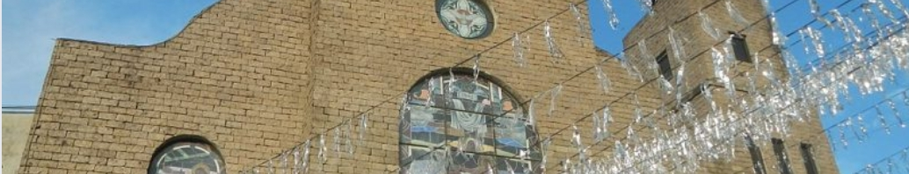
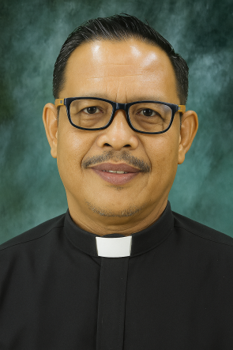
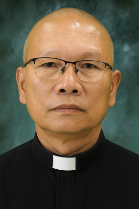
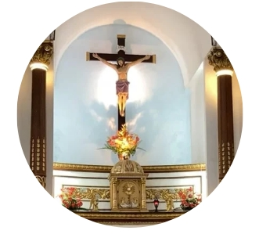
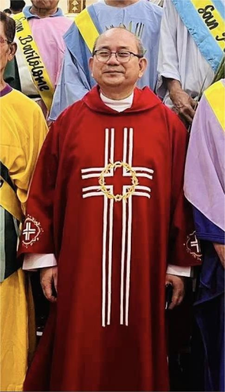
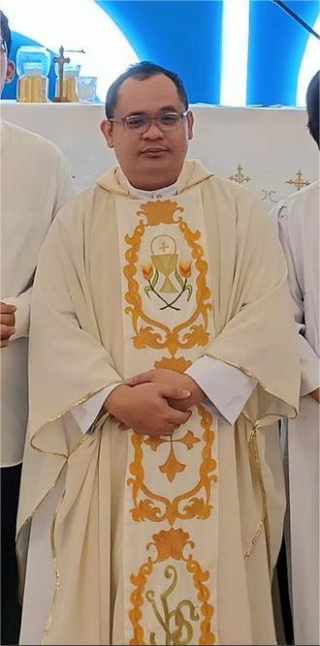

SANTA KRUS PARISH
DIOCESE OF NOVALICHES

History

Santa Krus Parish of the Roman Catholic Diocese of Novaliches was established on May 8, 2003. It is located in Bagumbong, Caloocan City. The parish traces its humble beginnings to a small chapel built in 1940, fondly called the “Bisita” by local residents. This chapel was originally located at Bagumbong Kanto, the present-day site of Primark Bagumbong. In 1959, the Bisita was transferred to its current location, where the parish church now stands.
For many years, the chapel served as a spiritual center for the community. Eventually, on May 8, 2003, it was officially elevated to parish status under the Diocese of Novaliches, led by Bishop Emeritus Teodoro Bacani Jr. This marked a new chapter in the spiritual life of the people of Bagumbong.
The Diocese of Novaliches, to which Santa Krus Parish belongs, was created by Pope John Paul II on December 7, 2002, through the Apostolic Constitution Animarum Utilitati, and was canonically erected on January 16, 2003. It was formed from the Archdiocese of Manila and covers the northern parts of Caloocan and Quezon City. As of September 2018, the diocese is composed of 70 parishes and one mission area, grouped into twelve vicariates.
Santa Krus Parish holds the special distinction of being the first parish established under the newly formed Diocese of Novaliches. It was created to meet the growing spiritual and sacramental needs of the faithful in Bagumbong, who were previously served by nearby parishes. Since its establishment, Santa Krus Parish has grown into a vibrant and welcoming church community, offering regular Masses, sacraments, and programs that strengthen faith and unity. With the help of committed priests and active laypeople, the parish continues to be a center of worship, service, and evangelization in the area.
_______________________________________________________________________________________________________________
Here are the parish priests who have served Santa Krus Parish over the years:

Former Parish Priest
2003 - 2006
Rev. Fr. Efren Bantog, SOLT

Former Parish Priest
2007 - 2013
Rev. Fr. Wilfredo Villanueva, SOLT
Former Parish Priest
2013 - 2018
Rev. Fr. Aldrin Lopez
Parish Priest
2018 - Present
Rev. Fr. James Nitollama
Mission & Vision

We, the Church of Novaliches, are a Spirit-led Christ-centered community of disciples listening and responding to the needs and aspirations of people, journeying and evangelizing together with them, and with the Blessed Virgin Mary as an exemplary model, towards the newness and fullness of life.
Parish Priest

Rev. Fr. James Nitollama

Rev. Fr. Noel TATOY